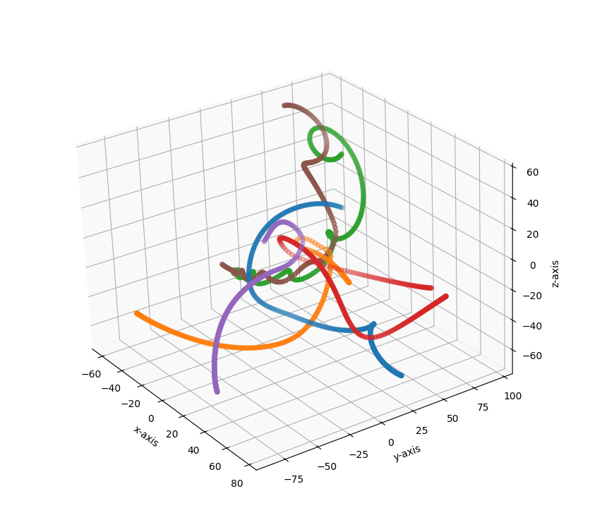
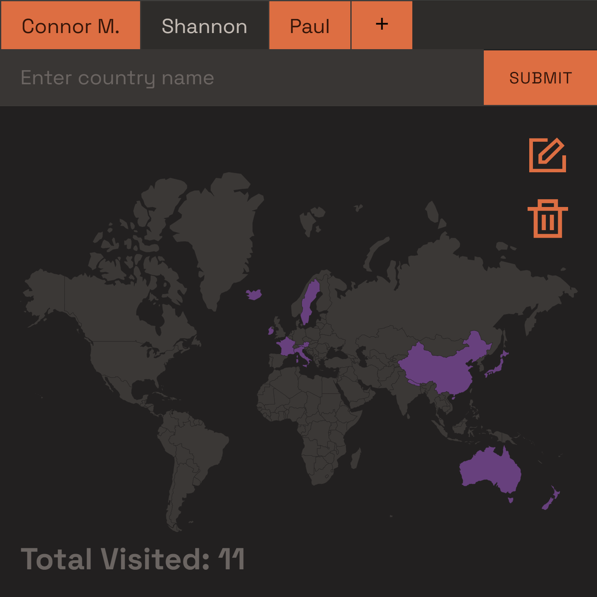
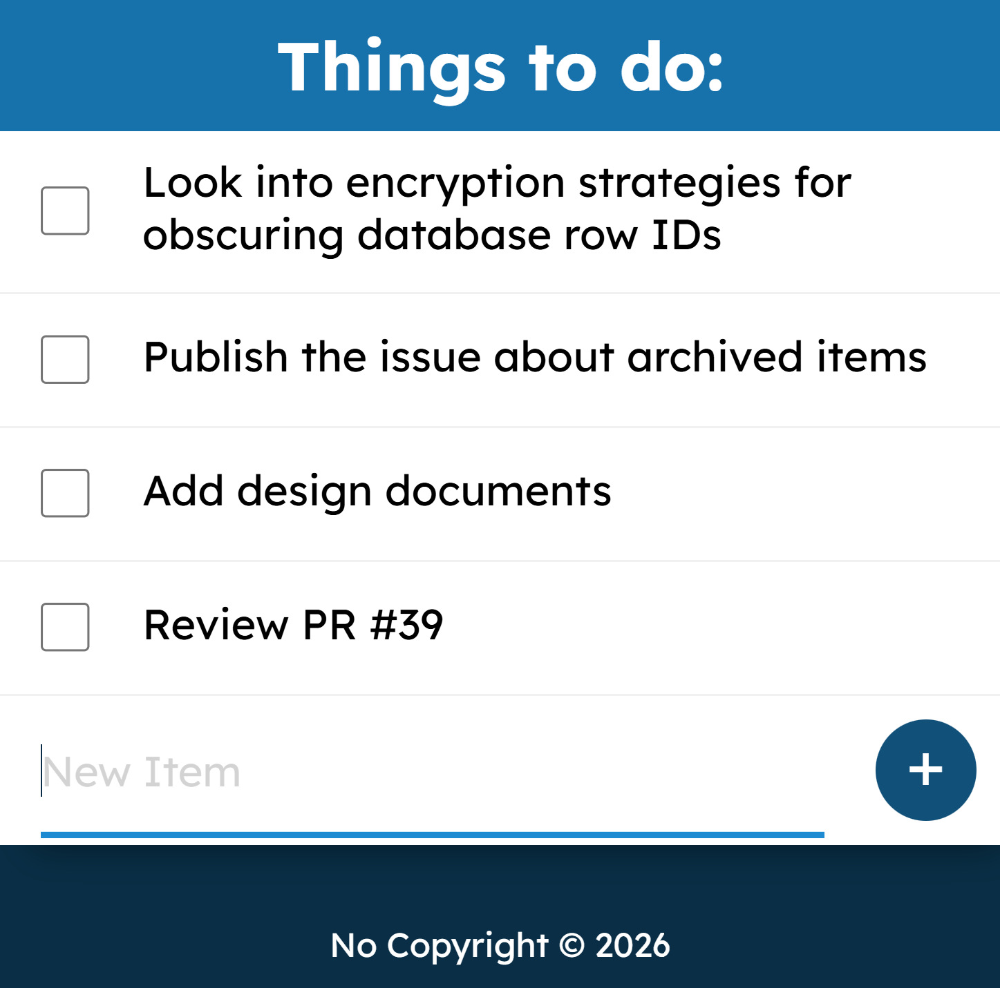

Personal Projects
Hi, I'm Callum 🙋♂️ I'm a self-taught developer living in Bristol currently looking for my first developer role. Here are some of the things that I've built:
3D Gravity Simulation


A 3D gravitational N-body simulation built in Python. Implements Verlet integration for stable orbits, plus collision handling and configuration options. Visualised in 3D with matplotlib, and covered by a pytest test suite.
Travel Tracker

An interactive world map to track the countries you've visited. Built with Node.js and Express, it stores visit data in PostgreSQL and colours visited countries with custom colours on an SVG map rendered via EJS.
To-do List

RESTful to-do list app with persistent PostgreSQL storage and client-side DOM rendering, evolved from an earlier EJS-based server-rendered architecture.